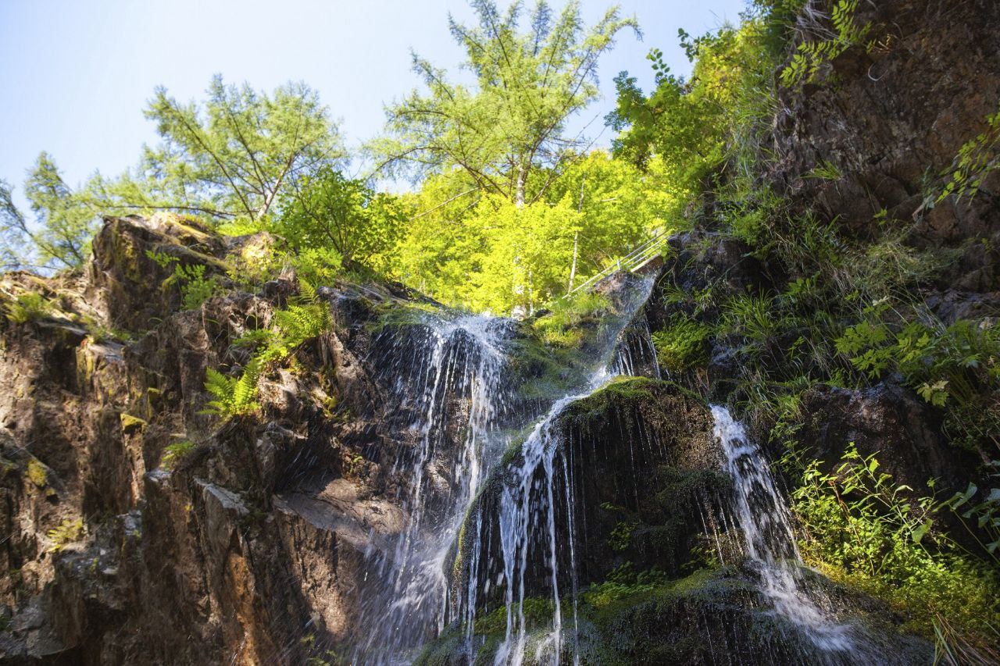

Тор 4 кращих водоспадів у "Schwarzwald"
Водоспади Тріберг з висотою падіння 163 метри і сімома каскадами входять до найвищих водоспадів Німеччини.Ще однією визначною пам'яткою парку є різноманітна навколишня флора та фауна
-
Водоспад Тодтнау

Серед гір Тодтнау в Шварцвальді, між курортами Тодтнауберг і Афтерштег, захоплююче скидається в глибину водоспад Тодтнау, найвищий природний водоспад Баден-Вюртемберга заввишки 97 м.
-
Водоспад Фалер

Його вважають "молодшим братом" водоспаду Тодтнау. Цей повністю природний водоспад вже багато років доступний пішохідними стежками і мостами
-
Водоспад Віндберг

Водоспад Віндберг розташований на східній околиці Санкт-Блазієна. Води струмка Віндберг скидаються з висоти 6 метрів у ущелині Віндберг.
-
Водоспад Менценшванд

Відвідування водоспаду Менценшванд, що замикає долину льодовикового жолоба Менценшванд на півночі, є вражаючою природною освітою. Повеневі води, що стікають з гори Фельдберг, утворили ущелину зі скелястими стінами заввишки до 30 метрів під час та після льодовикового періоду. Відвідувачі можуть дослідити ущелину, пройшовши стежкою.